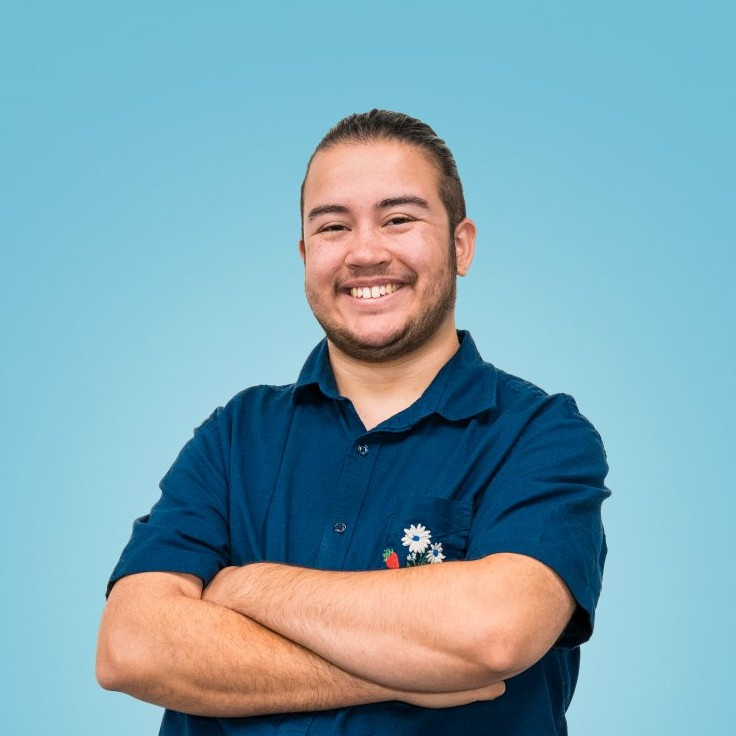

I am a graduate of UNC Charlotte with a B.S. in Computer Science, where I gained experience with a variety of programming languages and frameworks. Being able to take an idea and bring it to life through code or art is one of my favorite things, and I am always looking for new ways to challenge myself and grow as a creator.
I love working on my garden, reading science fiction, playing video games, and spending time with my cat, Burnt Rotisserie Chicken (yes, that is her actual name). I'm also a big fan of baking, and am famous among my friends for my banana chocolate chip cookies.
Programming Languages: C#, C++, C, Java, JavaScript, Python, HTML, CSS, MySQL
Software: Maya, ZBrush, Adobe Animate, Audacity, OpenShot Video Editor, Power BI
Game Engines: Unreal Engine, Unity
Lighting Technologies: Acuity, Casambi, Crestron, Current, DMX, Lutron, Nicolaudie, Wattstopper
Controls Technician II
IoT Deployment Services - Charlotte, NC (September 2023 - Present)
Summer Camp Instructor
Smart Educational Art - Charlotte, NC (July 2023)
Robotics Coach
YouCan Tech - Charlotte, NC (April 2021 - December 2023)
3D Artist
LEAF Festival - Remote (January 2020 - May 2020)
Youth Technology Teacher
Dottie Rose Foundation - Charlotte, NC (May 2019 - July 2019)
University of North Carolina Charlotte
August 2021 - August 2023
B.S. in Computer Science, A.I., Robotics, and Gaming Concentration
Central Piedmont Community College
August 2018 - May 2021
A.A.S. in Simulation and Game Development